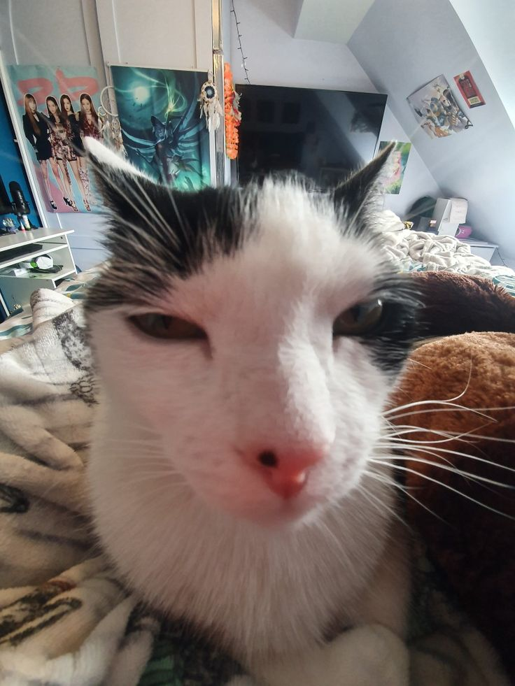

About this demo
This little demo is built for the Web Design for Everybody Specialization, to satisfy the assignment checklist: focus-only skip link (position + :focus), flex navigation, grid gallery, image box-model usage (border, padding, border-radius), :hover transitions, and :nth-child styling.
CEO Cat
Design lead: Specialist.

Okay Cat
Front-end developer: loves affirmations.

Drunk Cat
It doesnt do anything.